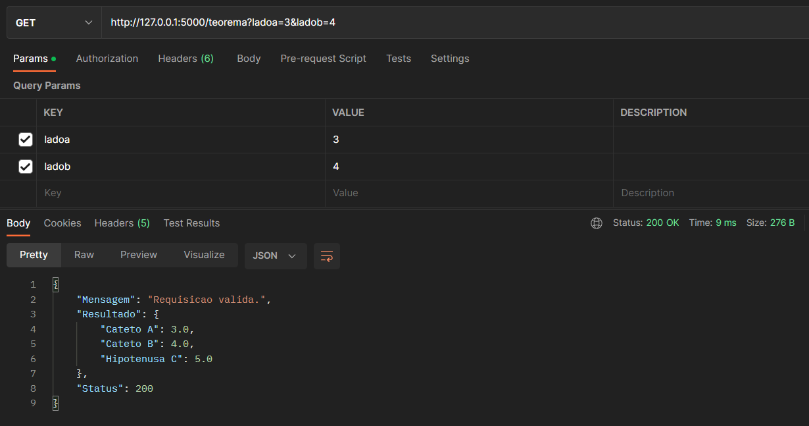
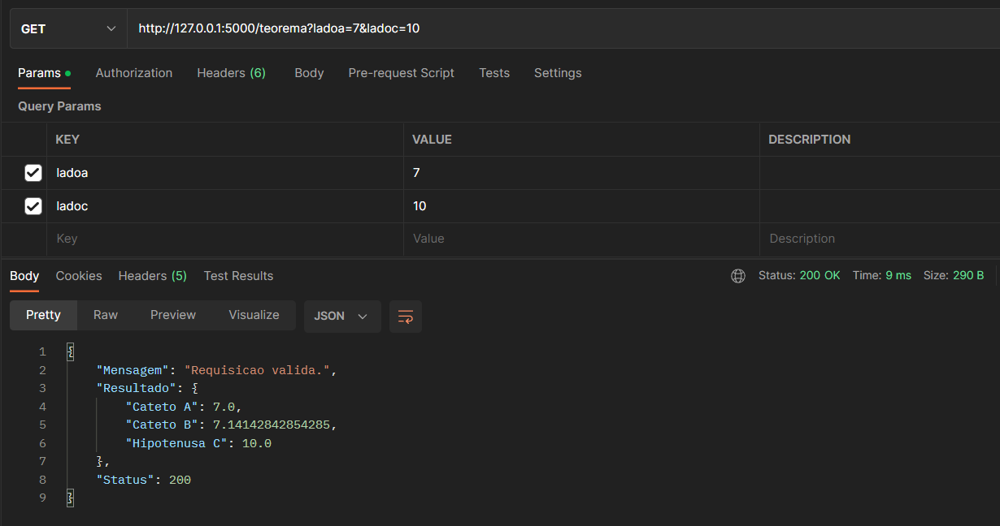
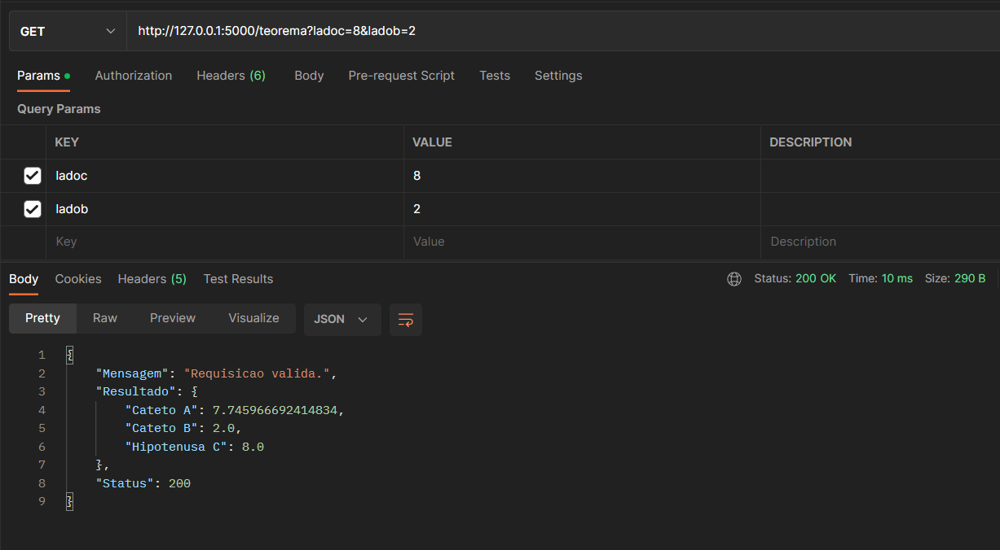
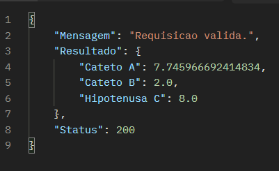
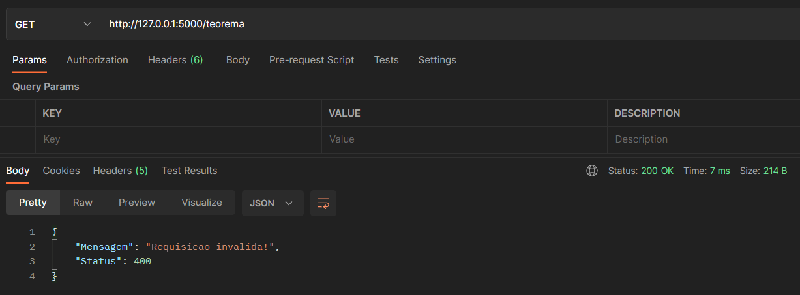
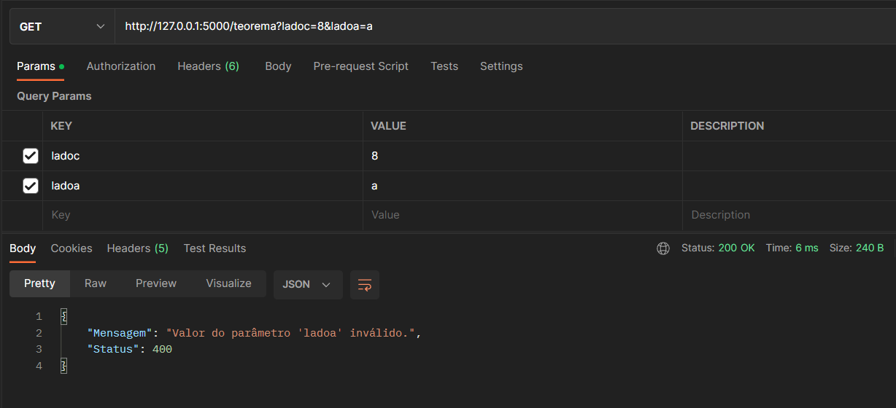

A API é bem simples e tem uma única função: retornar o terceiro lado de um triângulo seguindo o teorema de Pitágoras. Para vê-la funcionando, basta seguir os modelos de requisição abaixo:
Passando os valores para o cateto A e o cateto B, utilizando o método GET: http://127.0.0.1:5000/teorema?ladoa=3&ladob=4
Passando os valores para o cateto A e a hipotenusa C, utilizando o método GET: http://127.0.0.1:5000/teorema?ladoa=7&ladoc=10
Passando os valores para o cateto B e a hipotenusa C, utilizando o método GET: http://127.0.0.1:5000/teorema?ladoc=8&ladob=2
Ao fazer a requisição, não importa a ordem dos catetos e a hipotenusa. Você obtera os mesmos resultados.
A API vai retornar um JSON com a seguinte estrutura:
{
"Mensagem": "Requisicao valida.",
"Resultado": {"Cateto A": 3.0,"Cateto B": 4.0,"Hipotenusa C": 5.0},
"Status": 200
}
A mensagem junto com o status vão dizer se a requisição é válida ou não.
Já o resultado é onde será retornado os valores dos lados passados como parâmetro junto o lado que foi calculado.
Caso você passe um parametro errado pela url ou não passe parâmetros. Exemplo: http://127.0.0.1:5000/teorema
Caso você passe valores de tipo não numérico para os parâmetros. Exemplo: http://127.0.0.1:5000/teorema?ladoa=oito&ladob=tres
